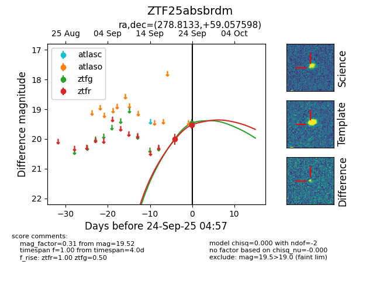
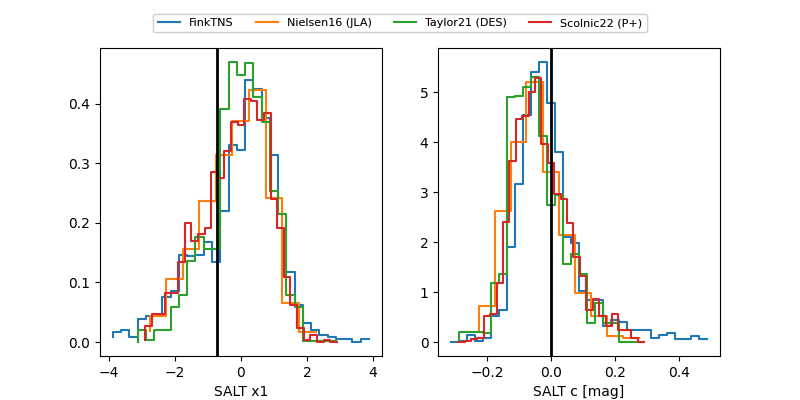

FINK: ZTF25absbrdm
Lasair: ZTF25absbrdm
ALeRCE: ZTF25absbrdm
ZTF25absbrdm (ztf,fink)
equatorial (ra, dec) = (278.8133,+59.05760)
galactic (l, b) = (88.4505,+25.04816)


last ztfg=19.46, ztfr=19.52
1 ztfg, 2 ztfr detections